1,118 closed detail meshes across six businesses. Approved street footprint, entrances and earlier pub/Taraj/Town Square interiors retained. Generic display blocks are archived unchanged. Category-led original modelled stock; no source photo edits or established new shop interiors.
Road, pub/alley and 1,054 selected pavement/shelter/entry samples pass. Blender geometry checks only, not continuous collision or BO3 runtime tests.
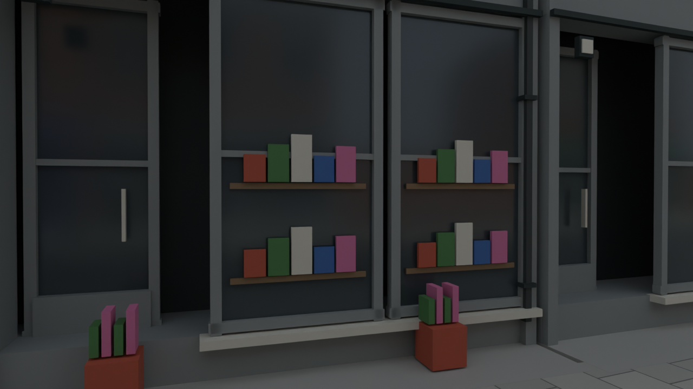
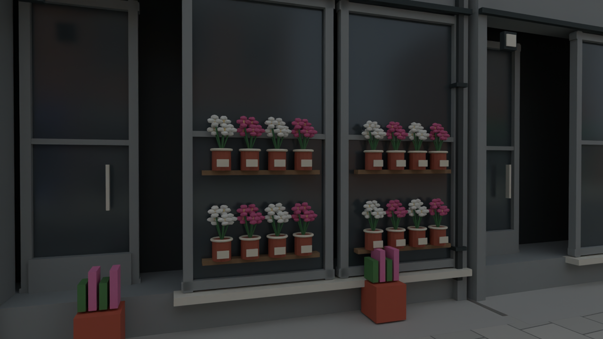
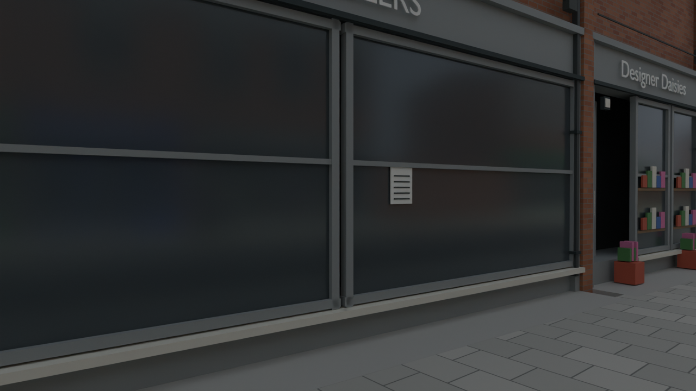
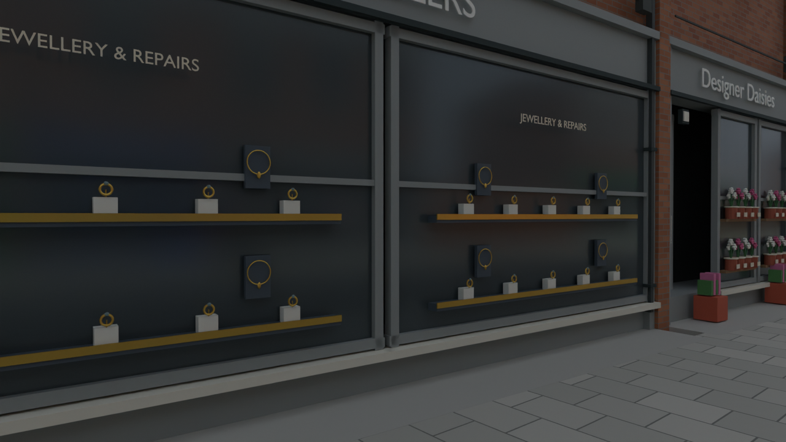
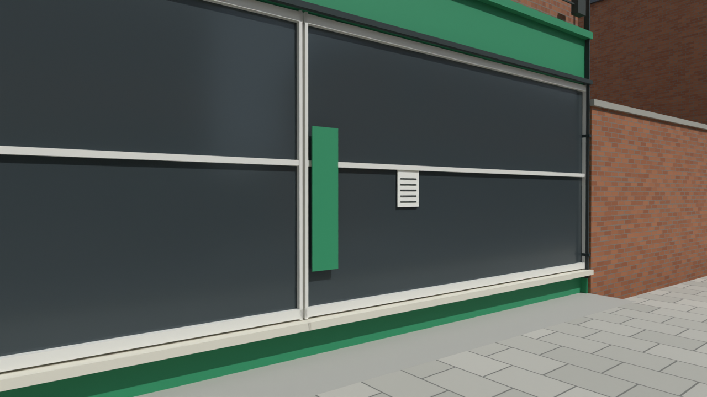
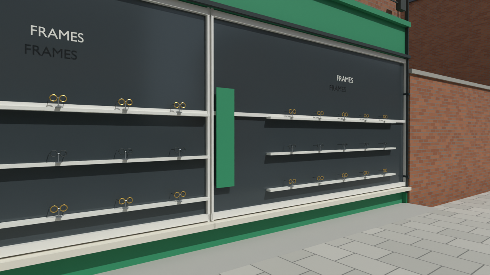
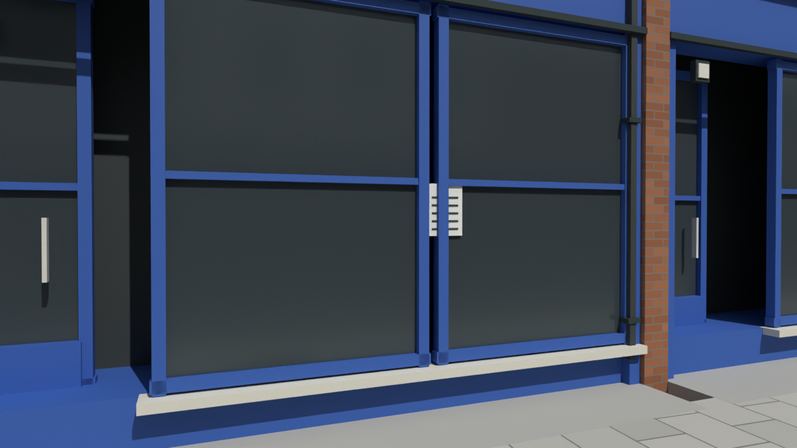
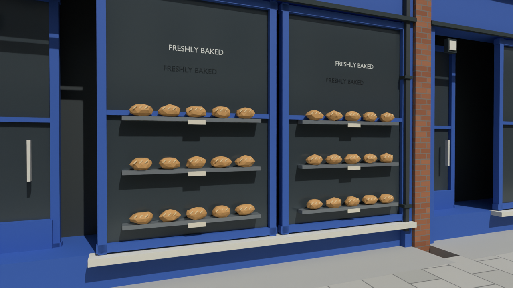
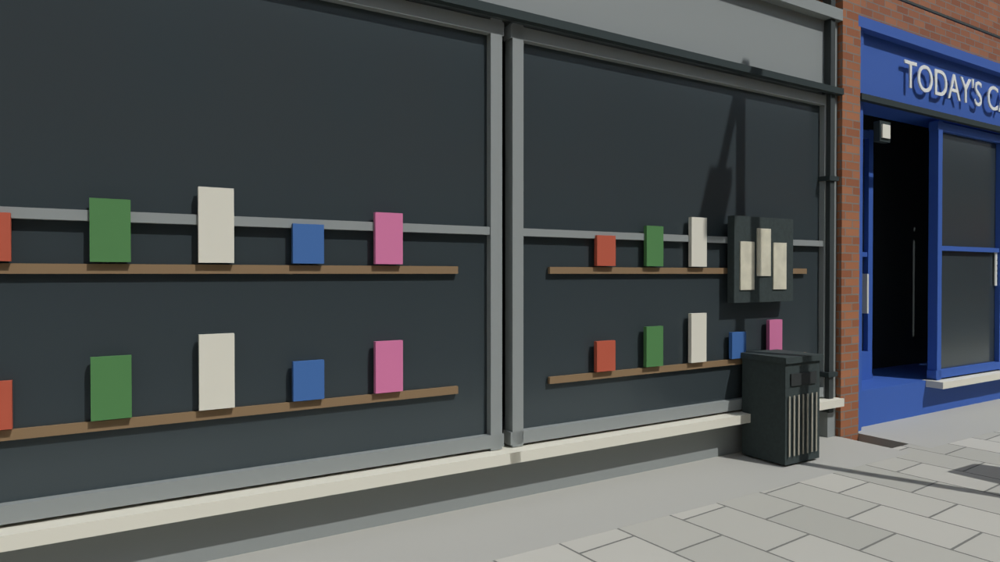
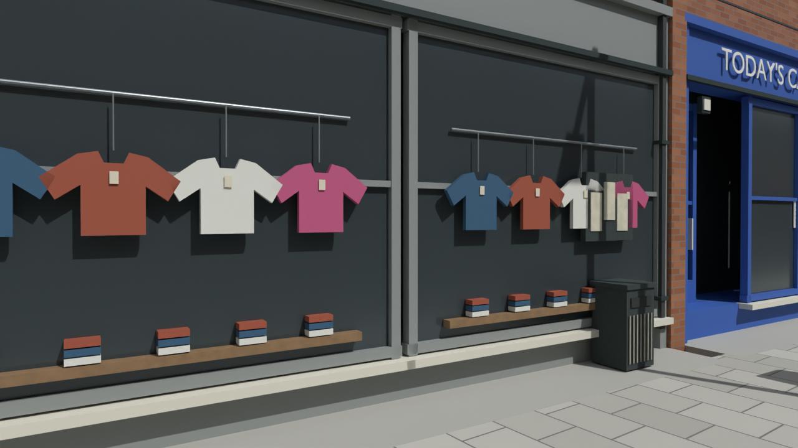
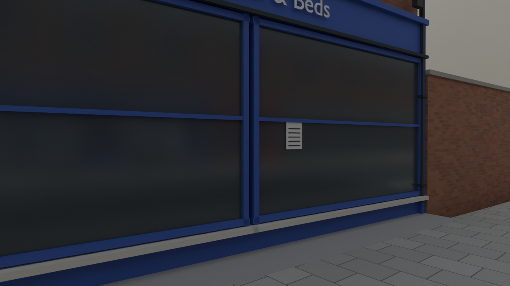
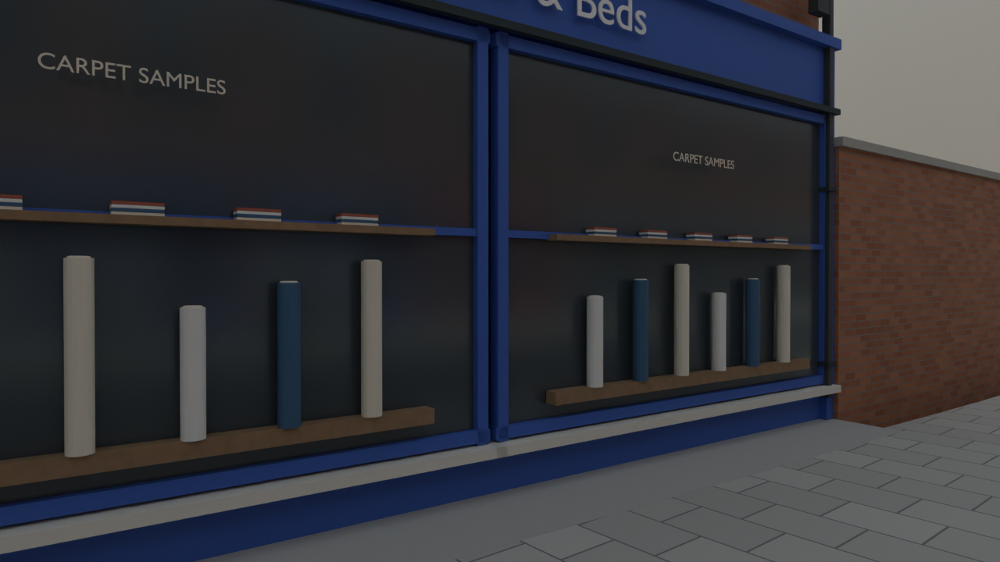